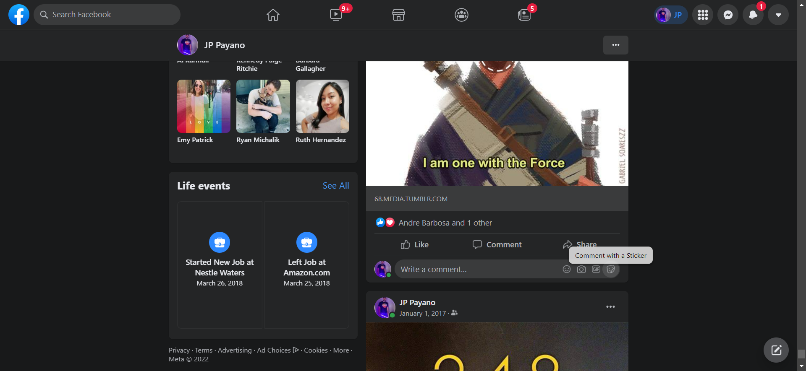

Report generated on 08-Feb-2022 at 21:45:29 by pytest-html v3.1.1
| Packages | {"pluggy": "1.0.0", "py": "1.11.0", "pytest": "6.2.5"} |
| Platform | Windows-10-10.0.19042-SP0 |
| Plugins | {"Faker": "11.3.0", "html": "3.1.1", "metadata": "1.11.0"} |
| Python | 3.9.10 |
1 tests ran in 383.41 seconds.
(Un)check the boxes to filter the results.
0 passed, 0 skipped, 1 failed, 0 errors, 0 expected failures, 0 unexpected passes| Result | Test | Duration | Links |
|---|---|---|---|
| No results found. Try to check the filters | |||
| Failed | testcases/test_delete_posts.py::TestDeleteOldPosts::test_delete_fb_posts_1_data | 382.94 | URL |
|
 self = <test_delete_posts.TestDeleteOldPosts testMethod=test_delete_fb_posts_1_data>, dateOfInterest = 'March 13, 2017' @file_data("../testdata/data_json.json") def test_delete_fb_posts(self,dateOfInterest): #note four arguments and four per test case in the data tag fb_home = self.lp.loginToFB() time.sleep(2) fb_userProfile = fb_home.navigateToUserProfile() usersName = fb_userProfile.get_users_name() indexOfFirstPost = fb_userProfile.find_first_post_before_date(dateOfInterest) > fb_userProfile.go_through_posts_and_delete(dateOfInterest,usersName,indexOfFirstPost) testcases\test_delete_posts.py:33: _ _ _ _ _ _ _ _ _ _ _ _ _ _ _ _ _ _ _ _ _ _ _ _ _ _ _ _ _ _ _ _ _ _ _ _ _ _ _ _ pages\FB_user_profile_page.py:283: in go_through_posts_and_delete if self.postMeetsCriteria(post,dateOfInterest,usersName): pages\FB_user_profile_page.py:247: in postMeetsCriteria date = self.get_date_from_post(post) pages\FB_user_profile_page.py:39: in get_date_from_post child = self.get_child_element(By.XPATH,post,self.DATE_ELEMENT_CHILD) base\base_driver.py:42: in get_child_element return parent.find_element(locator_type,child_locator) ..\..\AppData\Local\Packages\PythonSoftwareFoundation.Python.3.9_qbz5n2kfra8p0\LocalCache\local-packages\Python39\site-packages\selenium\webdriver\remote\webelement.py:735: in find_element return self._execute(Command.FIND_CHILD_ELEMENT, ..\..\AppData\Local\Packages\PythonSoftwareFoundation.Python.3.9_qbz5n2kfra8p0\LocalCache\local-packages\Python39\site-packages\selenium\webdriver\remote\webelement.py:710: in _execute return self._parent.execute(command, params) ..\..\AppData\Local\Packages\PythonSoftwareFoundation.Python.3.9_qbz5n2kfra8p0\LocalCache\local-packages\Python39\site-packages\selenium\webdriver\remote\webdriver.py:424: in execute self.error_handler.check_response(response) _ _ _ _ _ _ _ _ _ _ _ _ _ _ _ _ _ _ _ _ _ _ _ _ _ _ _ _ _ _ _ _ _ _ _ _ _ _ _ _ self = <selenium.webdriver.remote.errorhandler.ErrorHandler object at 0x00000268D2C4A5B0> response = {'status': 404, 'value': '{"value":{"error":"stale element reference","message":"stale element reference: element is n...\n\\tRtlGetAppContainerNamedObjectPath [0x77A87A9E+286]\\n\\tRtlGetAppContainerNamedObjectPath [0x77A87A6E+238]\\n"}}'} def check_response(self, response: Dict[str, Any]) -> None: """ Checks that a JSON response from the WebDriver does not have an error. :Args: - response - The JSON response from the WebDriver server as a dictionary object. :Raises: If the response contains an error message. """ status = response.get('status', None) if not status or status == ErrorCode.SUCCESS: return value = None message = response.get("message", "") screen: str = response.get("screen", "") stacktrace = None if isinstance(status, int): value_json = response.get('value', None) if value_json and isinstance(value_json, str): import json try: value = json.loads(value_json) if len(value.keys()) == 1: value = value['value'] status = value.get('error', None) if not status: status = value.get("status", ErrorCode.UNKNOWN_ERROR) message = value.get("value") or value.get("message") if not isinstance(message, str): value = message message = message.get('message') else: message = value.get('message', None) except ValueError: pass exception_class: Type[WebDriverException] if status in ErrorCode.NO_SUCH_ELEMENT: exception_class = NoSuchElementException elif status in ErrorCode.NO_SUCH_FRAME: exception_class = NoSuchFrameException elif status in ErrorCode.NO_SUCH_SHADOW_ROOT: exception_class = NoSuchShadowRootException elif status in ErrorCode.NO_SUCH_WINDOW: exception_class = NoSuchWindowException elif status in ErrorCode.STALE_ELEMENT_REFERENCE: exception_class = StaleElementReferenceException elif status in ErrorCode.ELEMENT_NOT_VISIBLE: exception_class = ElementNotVisibleException elif status in ErrorCode.INVALID_ELEMENT_STATE: exception_class = InvalidElementStateException elif status in ErrorCode.INVALID_SELECTOR \ or status in ErrorCode.INVALID_XPATH_SELECTOR \ or status in ErrorCode.INVALID_XPATH_SELECTOR_RETURN_TYPER: exception_class = InvalidSelectorException elif status in ErrorCode.ELEMENT_IS_NOT_SELECTABLE: exception_class = ElementNotSelectableException elif status in ErrorCode.ELEMENT_NOT_INTERACTABLE: exception_class = ElementNotInteractableException elif status in ErrorCode.INVALID_COOKIE_DOMAIN: exception_class = InvalidCookieDomainException elif status in ErrorCode.UNABLE_TO_SET_COOKIE: exception_class = UnableToSetCookieException elif status in ErrorCode.TIMEOUT: exception_class = TimeoutException elif status in ErrorCode.SCRIPT_TIMEOUT: exception_class = TimeoutException elif status in ErrorCode.UNKNOWN_ERROR: exception_class = WebDriverException elif status in ErrorCode.UNEXPECTED_ALERT_OPEN: exception_class = UnexpectedAlertPresentException elif status in ErrorCode.NO_ALERT_OPEN: exception_class = NoAlertPresentException elif status in ErrorCode.IME_NOT_AVAILABLE: exception_class = ImeNotAvailableException elif status in ErrorCode.IME_ENGINE_ACTIVATION_FAILED: exception_class = ImeActivationFailedException elif status in ErrorCode.MOVE_TARGET_OUT_OF_BOUNDS: exception_class = MoveTargetOutOfBoundsException elif status in ErrorCode.JAVASCRIPT_ERROR: exception_class = JavascriptException elif status in ErrorCode.SESSION_NOT_CREATED: exception_class = SessionNotCreatedException elif status in ErrorCode.INVALID_ARGUMENT: exception_class = InvalidArgumentException elif status in ErrorCode.NO_SUCH_COOKIE: exception_class = NoSuchCookieException elif status in ErrorCode.UNABLE_TO_CAPTURE_SCREEN: exception_class = ScreenshotException elif status in ErrorCode.ELEMENT_CLICK_INTERCEPTED: exception_class = ElementClickInterceptedException elif status in ErrorCode.INSECURE_CERTIFICATE: exception_class = InsecureCertificateException elif status in ErrorCode.INVALID_COORDINATES: exception_class = InvalidCoordinatesException elif status in ErrorCode.INVALID_SESSION_ID: exception_class = InvalidSessionIdException elif status in ErrorCode.UNKNOWN_METHOD: exception_class = UnknownMethodException else: exception_class = WebDriverException if not value: value = response['value'] if isinstance(value, str): raise exception_class(value) if message == "" and 'message' in value: message = value['message'] screen = None # type: ignore[assignment] if 'screen' in value: screen = value['screen'] stacktrace = None st_value = value.get('stackTrace') or value.get('stacktrace') if st_value: if isinstance(st_value, str): stacktrace = st_value.split('\n') else: stacktrace = [] try: for frame in st_value: line = self._value_or_default(frame, 'lineNumber', '') file = self._value_or_default(frame, 'fileName', '<anonymous>') if line: file = "%s:%s" % (file, line) meth = self._value_or_default(frame, 'methodName', '<anonymous>') if 'className' in frame: meth = "%s.%s" % (frame['className'], meth) msg = " at %s (%s)" msg = msg % (meth, file) stacktrace.append(msg) except TypeError: pass if exception_class == UnexpectedAlertPresentException: alert_text = None if 'data' in value: alert_text = value['data'].get('text') elif 'alert' in value: alert_text = value['alert'].get('text') raise exception_class(message, screen, stacktrace, alert_text) # type: ignore[call-arg] # mypy is not smart enough here > raise exception_class(message, screen, stacktrace) E selenium.common.exceptions.StaleElementReferenceException: Message: stale element reference: element is not attached to the page document E (Session info: chrome=97.0.4692.99) E Stacktrace: E Backtrace: E Ordinal0 [0x0123FDC3+2555331] E Ordinal0 [0x011D77F1+2127857] E Ordinal0 [0x010D2E08+1060360] E Ordinal0 [0x010D5524+1070372] E Ordinal0 [0x010D53EE+1070062] E Ordinal0 [0x010D5650+1070672] E Ordinal0 [0x010FE212+1237522] E Ordinal0 [0x010FE69B+1238683] E Ordinal0 [0x010F4A01+1198593] E Ordinal0 [0x01117B54+1342292] E Ordinal0 [0x010F4984+1198468] E Ordinal0 [0x01117C14+1342484] E Ordinal0 [0x011275FA+1406458] E Ordinal0 [0x01117976+1341814] E Ordinal0 [0x010F36B6+1193654] E Ordinal0 [0x010F4546+1197382] E GetHandleVerifier [0x013D9622+1619522] E GetHandleVerifier [0x0148882C+2336844] E GetHandleVerifier [0x012D23E1+541697] E GetHandleVerifier [0x012D1443+537699] E Ordinal0 [0x011DD18E+2150798] E Ordinal0 [0x011E1518+2168088] E Ordinal0 [0x011E1660+2168416] E Ordinal0 [0x011EB330+2208560] E BaseThreadInitThunk [0x7625FA29+25] E RtlGetAppContainerNamedObjectPath [0x77A87A9E+286] E RtlGetAppContainerNamedObjectPath [0x77A87A6E+238] ..\..\AppData\Local\Packages\PythonSoftwareFoundation.Python.3.9_qbz5n2kfra8p0\LocalCache\local-packages\Python39\site-packages\selenium\webdriver\remote\errorhandler.py:247: StaleElementReferenceException -----------------------------Captured stderr setup------------------------------ ====== WebDriver manager ====== Current google-chrome version is 97.0.4692 Get LATEST chromedriver version for 97.0.4692 google-chrome Driver [C:\Users\Payan\.wdm\drivers\chromedriver\win32\97.0.4692.71\chromedriver.exe] found in cache -------------------------------Captured log setup------------------------------- INFO WDM:logger.py:26 INFO WDM:logger.py:26 ====== WebDriver manager ====== INFO WDM:logger.py:26 Current google-chrome version is 97.0.4692 INFO WDM:logger.py:26 Get LATEST chromedriver version for 97.0.4692 google-chrome INFO WDM:logger.py:26 Driver [C:\Users\Payan\.wdm\drivers\chromedriver\win32\97.0.4692.71\chromedriver.exe] found in cache -------------------------------Captured log call-------------------------------- INFO FBLandingPage:FB_landing_page.py:35 attempting to enter email INFO FBLandingPage:FB_landing_page.py:40 Typed email into email field successfully INFO FBLandingPage:FB_landing_page.py:46 attempting to enter password INFO FBLandingPage:FB_landing_page.py:50 Typed password into password field successfully INFO FBLandingPage:FB_landing_page.py:57 attempting to click login INFO FBHomePage:FB_home_page.py:23 attempting to click user profile INFO FBHomePage:FB_home_page.py:27 clicked user profile successfully INFO UserProfile:FB_user_profile_page.py:153 searching for first post that is before the given date (March 13, 2017) WARNING UserProfile:base_driver.py:44 childe element did not exist WARNING handle_exception:utils.py:122 the type of exception: NoSuchElementException WARNING handle_exception:utils.py:123 the name of the screenshot for this exception is: C:\Users\Payan\Desktop\FB Project\screenshots\get_child_element1644374409315.png WARNING handle_exception:utils.py:126 the function: [' return parent.find_element(locator_type,child_locator)\n'] and the the line: 42 WARNING handle_exception:utils.py:126 the function: [' return self._execute(Command.FIND_CHILD_ELEMENT,\n'] and the the line: 735 WARNING handle_exception:utils.py:126 the function: [' return self._parent.execute(command, params)\n'] and the the line: 710 WARNING handle_exception:utils.py:126 the function: [' self.error_handler.check_response(response)\n'] and the the line: 424 WARNING handle_exception:utils.py:126 the function: [' raise exception_class(message, screen, stacktrace)\n'] and the the line: 247 INFO UserProfile:FB_user_profile_page.py:188 waiting in case of sync issue INFO UserProfile:FB_user_profile_page.py:188 waiting in case of sync issue INFO UserProfile:FB_user_profile_page.py:169 the current post is before the date of interest (March 12, 2017) INFO UserProfile:FB_user_profile_page.py:170 We found the first post! INFO UserProfile:FB_user_profile_page.py:173 JP Payano INFO UserProfile:FB_user_profile_page.py:174 March 12, 2017 INFO UserProfile:FB_user_profile_page.py:176 we found the first post that is before the given date of March 13, 2017 the number of loops it took to get here was 129 the index of the first post is 477 INFO UserProfile:FB_user_profile_page.py:231 this is the latest post before the date of interest (March 14, 2017) INFO UserProfile:FB_user_profile_page.py:232 We found the first post(to ignore)! INFO UserProfile:FB_user_profile_page.py:235 JP Payano INFO UserProfile:FB_user_profile_page.py:236 March 14, 2017 INFO UserProfile:FB_user_profile_page.py:238 we found the first post that is before the given date of March 13, 2017 the index of the first post is 476 INFO UserProfile:FB_user_profile_page.py:280 this is post number 1 INFO UserProfile:FB_user_profile_page.py:251 the criteria is as follows username: JP Payano date:March 13, 2017 INFO UserProfile:FB_user_profile_page.py:252 date of post: March 14, 2017 name of poster: JP Payano fullText of name: JP Payano INFO UserProfile:FB_user_profile_page.py:259 the current post does NOT meet criteria INFO UserProfile:FB_user_profile_page.py:280 this is post number 2 INFO UserProfile:FB_user_profile_page.py:251 the criteria is as follows username: JP Payano date:March 13, 2017 INFO UserProfile:FB_user_profile_page.py:252 date of post: March 12, 2017 name of poster: JP Payano fullText of name: JP Payano updated his status. INFO UserProfile:FB_user_profile_page.py:259 the current post does NOT meet criteria INFO UserProfile:FB_user_profile_page.py:280 this is post number 3 INFO UserProfile:FB_user_profile_page.py:251 the criteria is as follows username: JP Payano date:March 13, 2017 INFO UserProfile:FB_user_profile_page.py:252 date of post: March 3, 2017 name of poster: JP Payano fullText of name: JP Payano updated his profile picture. INFO UserProfile:FB_user_profile_page.py:259 the current post does NOT meet criteria INFO UserProfile:FB_user_profile_page.py:280 this is post number 4 INFO UserProfile:FB_user_profile_page.py:251 the criteria is as follows username: JP Payano date:March 13, 2017 INFO UserProfile:FB_user_profile_page.py:252 date of post: February 20, 2017 name of poster: JP Payano fullText of name: JP Payano INFO UserProfile:FB_user_profile_page.py:257 current post meets the criteria INFO UserProfile:FB_user_profile_page.py:64 attempting to click the options for this post button INFO UserProfile:FB_user_profile_page.py:69 clicked on options button successfully INFO UserProfile:FB_user_profile_page.py:75 attempting to click move to trash button WARNING UserProfile:FB_user_profile_page.py:80 element did not exist WARNING handle_exception:utils.py:122 the type of exception: NoSuchElementException WARNING handle_exception:utils.py:123 the name of the screenshot for this exception is: C:\Users\Payan\Desktop\FB Project\screenshots\click_move_to_trash_button1644374594071.png WARNING handle_exception:utils.py:126 the function: [' self.get_move_to_trash_button().click()\n'] and the the line: 77 WARNING handle_exception:utils.py:126 the function: [' return self.driver.find_element(By.XPATH,self.MOVE_TO_TRASH_BUTTON)\n'] and the the line: 72 WARNING handle_exception:utils.py:126 the function: [' return self.execute(Command.FIND_ELEMENT, {\n'] and the the line: 1244 WARNING handle_exception:utils.py:126 the function: [' self.error_handler.check_response(response)\n'] and the the line: 424 WARNING handle_exception:utils.py:126 the function: [' raise exception_class(message, screen, stacktrace)\n'] and the the line: 247 INFO UserProfile:FB_user_profile_page.py:98 attempting to click on the final move to trash button WARNING UserProfile:FB_user_profile_page.py:103 element did not exist WARNING handle_exception:utils.py:122 the type of exception: NoSuchElementException WARNING handle_exception:utils.py:123 the name of the screenshot for this exception is: C:\Users\Payan\Desktop\FB Project\screenshots\click_finalize_move_to_trash_button1644374604293.png WARNING handle_exception:utils.py:126 the function: [' self.get_finalize_move_to_trash_button().click()\n'] and the the line: 100 WARNING handle_exception:utils.py:126 the function: [' return self.driver.find_element(By.XPATH,self.FINALIZE_MOVE_TO_TRASH_BUTTON)\n'] and the the line: 92 WARNING handle_exception:utils.py:126 the function: [' return self.execute(Command.FIND_ELEMENT, {\n'] and the the line: 1244 WARNING handle_exception:utils.py:126 the function: [' self.error_handler.check_response(response)\n'] and the the line: 424 WARNING handle_exception:utils.py:126 the function: [' raise exception_class(message, screen, stacktrace)\n'] and the the line: 247 INFO UserProfile:FB_user_profile_page.py:206 post hase been deleted INFO UserProfile:FB_user_profile_page.py:280 this is post number 5 INFO UserProfile:FB_user_profile_page.py:251 the criteria is as follows username: JP Payano date:March 13, 2017 INFO UserProfile:FB_user_profile_page.py:252 date of post: February 12, 2017 name of poster: JP Payano fullText of name: JP Payano INFO UserProfile:FB_user_profile_page.py:257 current post meets the criteria INFO UserProfile:FB_user_profile_page.py:64 attempting to click the options for this post button INFO UserProfile:FB_user_profile_page.py:69 clicked on options button successfully INFO UserProfile:FB_user_profile_page.py:75 attempting to click move to trash button WARNING UserProfile:FB_user_profile_page.py:80 element did not exist WARNING handle_exception:utils.py:122 the type of exception: NoSuchElementException WARNING handle_exception:utils.py:123 the name of the screenshot for this exception is: C:\Users\Payan\Desktop\FB Project\screenshots\click_move_to_trash_button1644374617213.png WARNING handle_exception:utils.py:126 the function: [' self.get_move_to_trash_button().click()\n'] and the the line: 77 WARNING handle_exception:utils.py:126 the function: [' return self.driver.find_element(By.XPATH,self.MOVE_TO_TRASH_BUTTON)\n'] and the the line: 72 WARNING handle_exception:utils.py:126 the function: [' return self.execute(Command.FIND_ELEMENT, {\n'] and the the line: 1244 WARNING handle_exception:utils.py:126 the function: [' self.error_handler.check_response(response)\n'] and the the line: 424 WARNING handle_exception:utils.py:126 the function: [' raise exception_class(message, screen, stacktrace)\n'] and the the line: 247 INFO UserProfile:FB_user_profile_page.py:98 attempting to click on the final move to trash button WARNING UserProfile:FB_user_profile_page.py:103 element did not exist WARNING handle_exception:utils.py:122 the type of exception: NoSuchElementException WARNING handle_exception:utils.py:123 the name of the screenshot for this exception is: C:\Users\Payan\Desktop\FB Project\screenshots\click_finalize_move_to_trash_button1644374627462.png WARNING handle_exception:utils.py:126 the function: [' self.get_finalize_move_to_trash_button().click()\n'] and the the line: 100 WARNING handle_exception:utils.py:126 the function: [' return self.driver.find_element(By.XPATH,self.FINALIZE_MOVE_TO_TRASH_BUTTON)\n'] and the the line: 92 WARNING handle_exception:utils.py:126 the function: [' return self.execute(Command.FIND_ELEMENT, {\n'] and the the line: 1244 WARNING handle_exception:utils.py:126 the function: [' self.error_handler.check_response(response)\n'] and the the line: 424 WARNING handle_exception:utils.py:126 the function: [' raise exception_class(message, screen, stacktrace)\n'] and the the line: 247 INFO UserProfile:FB_user_profile_page.py:206 post hase been deleted INFO UserProfile:FB_user_profile_page.py:280 this is post number 6 INFO UserProfile:FB_user_profile_page.py:251 the criteria is as follows username: JP Payano date:March 13, 2017 INFO UserProfile:FB_user_profile_page.py:252 date of post: February 8, 2017 name of poster: JP Payano fullText of name: JP Payano updated his status. INFO UserProfile:FB_user_profile_page.py:259 the current post does NOT meet criteria INFO UserProfile:FB_user_profile_page.py:280 this is post number 7 INFO UserProfile:FB_user_profile_page.py:251 the criteria is as follows username: JP Payano date:March 13, 2017 INFO UserProfile:FB_user_profile_page.py:252 date of post: January 28, 2017 name of poster: JP Payano fullText of name: JP Payano shared an episode of Robert Reich. INFO UserProfile:FB_user_profile_page.py:259 the current post does NOT meet criteria INFO UserProfile:FB_user_profile_page.py:280 this is post number 8 INFO UserProfile:FB_user_profile_page.py:251 the criteria is as follows username: JP Payano date:March 13, 2017 INFO UserProfile:FB_user_profile_page.py:252 date of post: January 23, 2017 name of poster: JP Payano fullText of name: JP Payano updated his status. INFO UserProfile:FB_user_profile_page.py:259 the current post does NOT meet criteria INFO UserProfile:FB_user_profile_page.py:280 this is post number 9 INFO UserProfile:FB_user_profile_page.py:251 the criteria is as follows username: JP Payano date:March 13, 2017 INFO UserProfile:FB_user_profile_page.py:252 date of post: January 15, 2017 name of poster: JP Payano fullText of name: JP Payano INFO UserProfile:FB_user_profile_page.py:257 current post meets the criteria INFO UserProfile:FB_user_profile_page.py:64 attempting to click the options for this post button INFO UserProfile:FB_user_profile_page.py:69 clicked on options button successfully INFO UserProfile:FB_user_profile_page.py:75 attempting to click move to trash button INFO UserProfile:FB_user_profile_page.py:78 clicked move to trash button successfully INFO UserProfile:FB_user_profile_page.py:98 attempting to click on the final move to trash button INFO UserProfile:FB_user_profile_page.py:101 clicked on the final move to trash button successfully INFO UserProfile:FB_user_profile_page.py:206 post hase been deleted INFO UserProfile:FB_user_profile_page.py:280 this is post number 10 INFO UserProfile:FB_user_profile_page.py:251 the criteria is as follows username: JP Payano date:March 13, 2017 INFO UserProfile:FB_user_profile_page.py:252 date of post: January 13, 2017 name of poster: JP Payano fullText of name: JP Payano updated his cover photo. INFO UserProfile:FB_user_profile_page.py:259 the current post does NOT meet criteria INFO UserProfile:FB_user_profile_page.py:280 this is post number 11 INFO UserProfile:FB_user_profile_page.py:251 the criteria is as follows username: JP Payano date:March 13, 2017 INFO UserProfile:FB_user_profile_page.py:252 date of post: January 12, 2017 name of poster: JP Payano fullText of name: JP Payano INFO UserProfile:FB_user_profile_page.py:257 current post meets the criteria INFO UserProfile:FB_user_profile_page.py:64 attempting to click the options for this post button INFO UserProfile:FB_user_profile_page.py:69 clicked on options button successfully INFO UserProfile:FB_user_profile_page.py:75 attempting to click move to trash button INFO UserProfile:FB_user_profile_page.py:78 clicked move to trash button successfully INFO UserProfile:FB_user_profile_page.py:98 attempting to click on the final move to trash button INFO UserProfile:FB_user_profile_page.py:101 clicked on the final move to trash button successfully INFO UserProfile:FB_user_profile_page.py:206 post hase been deleted INFO UserProfile:FB_user_profile_page.py:280 this is post number 12 INFO UserProfile:FB_user_profile_page.py:251 the criteria is as follows username: JP Payano date:March 13, 2017 INFO UserProfile:FB_user_profile_page.py:252 date of post: January 12, 2017 name of poster: JP Payano fullText of name: JP Payano shared a video from the playlist SAYS Compilations. INFO UserProfile:FB_user_profile_page.py:259 the current post does NOT meet criteria INFO UserProfile:FB_user_profile_page.py:280 this is post number 13 INFO UserProfile:FB_user_profile_page.py:251 the criteria is as follows username: JP Payano date:March 13, 2017 INFO UserProfile:FB_user_profile_page.py:252 date of post: January 12, 2017 name of poster: Dina Lovewell fullText of name: Dina Lovewell INFO UserProfile:FB_user_profile_page.py:259 the current post does NOT meet criteria INFO UserProfile:FB_user_profile_page.py:280 this is post number 14 INFO UserProfile:FB_user_profile_page.py:251 the criteria is as follows username: JP Payano date:March 13, 2017 INFO UserProfile:FB_user_profile_page.py:252 date of post: January 9, 2017 name of poster: JP Payano fullText of name: JP Payano INFO UserProfile:FB_user_profile_page.py:257 current post meets the criteria INFO UserProfile:FB_user_profile_page.py:64 attempting to click the options for this post button INFO UserProfile:FB_user_profile_page.py:69 clicked on options button successfully INFO UserProfile:FB_user_profile_page.py:75 attempting to click move to trash button INFO UserProfile:FB_user_profile_page.py:78 clicked move to trash button successfully INFO UserProfile:FB_user_profile_page.py:98 attempting to click on the final move to trash button INFO UserProfile:FB_user_profile_page.py:101 clicked on the final move to trash button successfully INFO UserProfile:FB_user_profile_page.py:206 post hase been deleted INFO UserProfile:FB_user_profile_page.py:294 the number of total posts in the DOM is 490 INFO UserProfile:FB_user_profile_page.py:295 The number of posts gone through last loop are 14 INFO UserProfile:FB_user_profile_page.py:296 The number of posts deleted last time were 5 INFO UserProfile:FB_user_profile_page.py:280 this is post number 1 INFO UserProfile:FB_user_profile_page.py:251 the criteria is as follows username: JP Payano date:March 13, 2017 INFO UserProfile:FB_user_profile_page.py:252 date of post: March 14, 2017 name of poster: JP Payano fullText of name: JP Payano INFO UserProfile:FB_user_profile_page.py:259 the current post does NOT meet criteria INFO UserProfile:FB_user_profile_page.py:280 this is post number 2 INFO UserProfile:FB_user_profile_page.py:251 the criteria is as follows username: JP Payano date:March 13, 2017 INFO UserProfile:FB_user_profile_page.py:252 date of post: March 12, 2017 name of poster: JP Payano fullText of name: JP Payano updated his status. INFO UserProfile:FB_user_profile_page.py:259 the current post does NOT meet criteria INFO UserProfile:FB_user_profile_page.py:280 this is post number 3 INFO UserProfile:FB_user_profile_page.py:251 the criteria is as follows username: JP Payano date:March 13, 2017 INFO UserProfile:FB_user_profile_page.py:252 date of post: March 3, 2017 name of poster: JP Payano fullText of name: JP Payano updated his profile picture. INFO UserProfile:FB_user_profile_page.py:259 the current post does NOT meet criteria INFO UserProfile:FB_user_profile_page.py:280 this is post number 4 INFO UserProfile:FB_user_profile_page.py:251 the criteria is as follows username: JP Payano date:March 13, 2017 INFO UserProfile:FB_user_profile_page.py:252 date of post: February 20, 2017 name of poster: JP Payano fullText of name: JP Payano INFO UserProfile:FB_user_profile_page.py:257 current post meets the criteria INFO UserProfile:FB_user_profile_page.py:64 attempting to click the options for this post button INFO UserProfile:FB_user_profile_page.py:69 clicked on options button successfully INFO UserProfile:FB_user_profile_page.py:75 attempting to click move to trash button WARNING UserProfile:FB_user_profile_page.py:80 element did not exist WARNING handle_exception:utils.py:122 the type of exception: NoSuchElementException WARNING handle_exception:utils.py:123 the name of the screenshot for this exception is: C:\Users\Payan\Desktop\FB Project\screenshots\click_move_to_trash_button1644374673601.png WARNING handle_exception:utils.py:126 the function: [' self.get_move_to_trash_button().click()\n'] and the the line: 77 WARNING handle_exception:utils.py:126 the function: [' return self.driver.find_element(By.XPATH,self.MOVE_TO_TRASH_BUTTON)\n'] and the the line: 72 WARNING handle_exception:utils.py:126 the function: [' return self.execute(Command.FIND_ELEMENT, {\n'] and the the line: 1244 WARNING handle_exception:utils.py:126 the function: [' self.error_handler.check_response(response)\n'] and the the line: 424 WARNING handle_exception:utils.py:126 the function: [' raise exception_class(message, screen, stacktrace)\n'] and the the line: 247 INFO UserProfile:FB_user_profile_page.py:98 attempting to click on the final move to trash button WARNING UserProfile:FB_user_profile_page.py:103 element did not exist WARNING handle_exception:utils.py:122 the type of exception: NoSuchElementException WARNING handle_exception:utils.py:123 the name of the screenshot for this exception is: C:\Users\Payan\Desktop\FB Project\screenshots\click_finalize_move_to_trash_button1644374684243.png WARNING handle_exception:utils.py:126 the function: [' self.get_finalize_move_to_trash_button().click()\n'] and the the line: 100 WARNING handle_exception:utils.py:126 the function: [' return self.driver.find_element(By.XPATH,self.FINALIZE_MOVE_TO_TRASH_BUTTON)\n'] and the the line: 92 WARNING handle_exception:utils.py:126 the function: [' return self.execute(Command.FIND_ELEMENT, {\n'] and the the line: 1244 WARNING handle_exception:utils.py:126 the function: [' self.error_handler.check_response(response)\n'] and the the line: 424 WARNING handle_exception:utils.py:126 the function: [' raise exception_class(message, screen, stacktrace)\n'] and the the line: 247 INFO UserProfile:FB_user_profile_page.py:206 post hase been deleted INFO UserProfile:FB_user_profile_page.py:280 this is post number 5 INFO UserProfile:FB_user_profile_page.py:251 the criteria is as follows username: JP Payano date:March 13, 2017 INFO UserProfile:FB_user_profile_page.py:252 date of post: February 12, 2017 name of poster: JP Payano fullText of name: JP Payano INFO UserProfile:FB_user_profile_page.py:257 current post meets the criteria INFO UserProfile:FB_user_profile_page.py:64 attempting to click the options for this post button INFO UserProfile:FB_user_profile_page.py:69 clicked on options button successfully INFO UserProfile:FB_user_profile_page.py:75 attempting to click move to trash button WARNING UserProfile:FB_user_profile_page.py:80 element did not exist WARNING handle_exception:utils.py:122 the type of exception: NoSuchElementException WARNING handle_exception:utils.py:123 the name of the screenshot for this exception is: C:\Users\Payan\Desktop\FB Project\screenshots\click_move_to_trash_button1644374698015.png WARNING handle_exception:utils.py:126 the function: [' self.get_move_to_trash_button().click()\n'] and the the line: 77 WARNING handle_exception:utils.py:126 the function: [' return self.driver.find_element(By.XPATH,self.MOVE_TO_TRASH_BUTTON)\n'] and the the line: 72 WARNING handle_exception:utils.py:126 the function: [' return self.execute(Command.FIND_ELEMENT, {\n'] and the the line: 1244 WARNING handle_exception:utils.py:126 the function: [' self.error_handler.check_response(response)\n'] and the the line: 424 WARNING handle_exception:utils.py:126 the function: [' raise exception_class(message, screen, stacktrace)\n'] and the the line: 247 INFO UserProfile:FB_user_profile_page.py:98 attempting to click on the final move to trash button WARNING UserProfile:FB_user_profile_page.py:103 element did not exist WARNING handle_exception:utils.py:122 the type of exception: NoSuchElementException WARNING handle_exception:utils.py:123 the name of the screenshot for this exception is: C:\Users\Payan\Desktop\FB Project\screenshots\click_finalize_move_to_trash_button1644374708337.png WARNING handle_exception:utils.py:126 the function: [' self.get_finalize_move_to_trash_button().click()\n'] and the the line: 100 WARNING handle_exception:utils.py:126 the function: [' return self.driver.find_element(By.XPATH,self.FINALIZE_MOVE_TO_TRASH_BUTTON)\n'] and the the line: 92 WARNING handle_exception:utils.py:126 the function: [' return self.execute(Command.FIND_ELEMENT, {\n'] and the the line: 1244 WARNING handle_exception:utils.py:126 the function: [' self.error_handler.check_response(response)\n'] and the the line: 424 WARNING handle_exception:utils.py:126 the function: [' raise exception_class(message, screen, stacktrace)\n'] and the the line: 247 INFO UserProfile:FB_user_profile_page.py:206 post hase been deleted INFO UserProfile:FB_user_profile_page.py:280 this is post number 6 INFO UserProfile:FB_user_profile_page.py:251 the criteria is as follows username: JP Payano date:March 13, 2017 INFO UserProfile:FB_user_profile_page.py:252 date of post: February 8, 2017 name of poster: JP Payano fullText of name: JP Payano updated his status. INFO UserProfile:FB_user_profile_page.py:259 the current post does NOT meet criteria INFO UserProfile:FB_user_profile_page.py:280 this is post number 7 INFO UserProfile:FB_user_profile_page.py:251 the criteria is as follows username: JP Payano date:March 13, 2017 INFO UserProfile:FB_user_profile_page.py:252 date of post: January 28, 2017 name of poster: JP Payano fullText of name: JP Payano shared an episode of Robert Reich. INFO UserProfile:FB_user_profile_page.py:259 the current post does NOT meet criteria INFO UserProfile:FB_user_profile_page.py:280 this is post number 8 INFO UserProfile:FB_user_profile_page.py:251 the criteria is as follows username: JP Payano date:March 13, 2017 INFO UserProfile:FB_user_profile_page.py:252 date of post: January 23, 2017 name of poster: JP Payano fullText of name: JP Payano updated his status. INFO UserProfile:FB_user_profile_page.py:259 the current post does NOT meet criteria INFO UserProfile:FB_user_profile_page.py:280 this is post number 9 INFO UserProfile:FB_user_profile_page.py:251 the criteria is as follows username: JP Payano date:March 13, 2017 INFO UserProfile:FB_user_profile_page.py:252 date of post: January 13, 2017 name of poster: JP Payano fullText of name: JP Payano updated his cover photo. INFO UserProfile:FB_user_profile_page.py:259 the current post does NOT meet criteria INFO UserProfile:FB_user_profile_page.py:280 this is post number 10 INFO UserProfile:FB_user_profile_page.py:251 the criteria is as follows username: JP Payano date:March 13, 2017 INFO UserProfile:FB_user_profile_page.py:252 date of post: January 12, 2017 name of poster: JP Payano fullText of name: JP Payano shared a video from the playlist SAYS Compilations. INFO UserProfile:FB_user_profile_page.py:259 the current post does NOT meet criteria INFO UserProfile:FB_user_profile_page.py:280 this is post number 11 INFO UserProfile:FB_user_profile_page.py:251 the criteria is as follows username: JP Payano date:March 13, 2017 INFO UserProfile:FB_user_profile_page.py:252 date of post: January 12, 2017 name of poster: Dina Lovewell fullText of name: Dina Lovewell INFO UserProfile:FB_user_profile_page.py:259 the current post does NOT meet criteria INFO UserProfile:FB_user_profile_page.py:280 this is post number 12 WARNING handle_exception:utils.py:122 the type of exception: StaleElementReferenceException WARNING handle_exception:utils.py:123 the name of the screenshot for this exception is: C:\Users\Payan\Desktop\FB Project\screenshots\scroll_to_element1644374723039.png WARNING handle_exception:utils.py:126 the function: [' self.driver.execute_script("arguments[0].scrollIntoView();", element)\n'] and the the line: 50 WARNING handle_exception:utils.py:126 the function: [' return self.execute(command, {\n'] and the the line: 878 WARNING handle_exception:utils.py:126 the function: [' self.error_handler.check_response(response)\n'] and the the line: 424 WARNING handle_exception:utils.py:126 the function: [' raise exception_class(message, screen, stacktrace)\n'] and the the line: 247 WARNING UserProfile:base_driver.py:60 stale reference but trying again WARNING UserProfile:base_driver.py:65 stale reference tried twice | |||